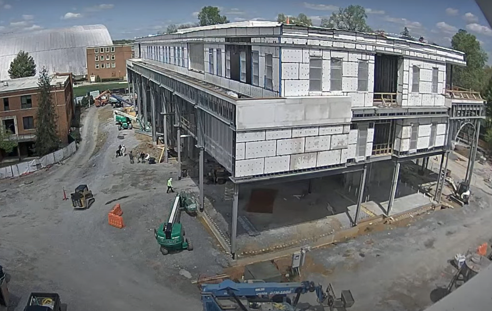
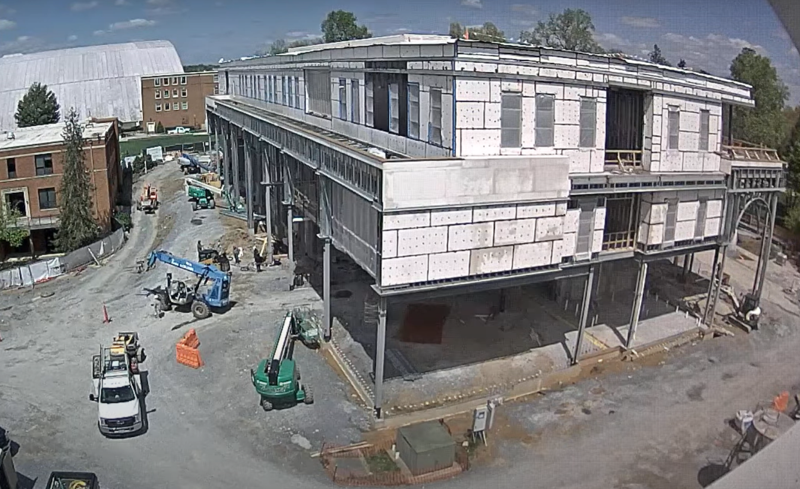
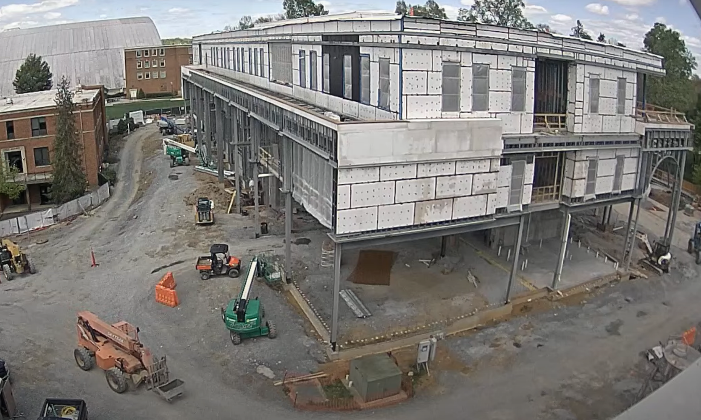

At 1:07 PM, the blue telehandler drove to the middle of the left side of the building. It then returned to the material pickup area, where it loaded a container onto its forks. The telehandler completed the cycle by driving back to the same location at 1:15 PM, making the total material transport cycle approximately 8 minutes.
At 1:07 PM, the blue telehandler drove to the middle of the left side of the building. It then returned to the material pickup area, where it loaded a container onto its forks. The telehandler completed the cycle by driving back to the same location at 1:15 PM, making the total material transport cycle approximately 8 minutes.
At 1:17 PM, a white truck pulled out from the first floor, shortly before the blue telehandler reversed and remained idle nearby. At 1:18 PM, the orange telehandler traveled down the vertical path and arrived at the material pickup area. It unloaded the container it was carrying, reloaded it, and then returned at 1:26 PM. Completing the loading and unloading cycle took approximately 8 minutes. After the orange telehandler passed, the blue telehandler proceeded to the material pickup area. It hooked and lifted a bag-shaped item, raised it, and transferred it to a higher level near the pickup zone. The telehandler then drove off at 1:29 PM.
